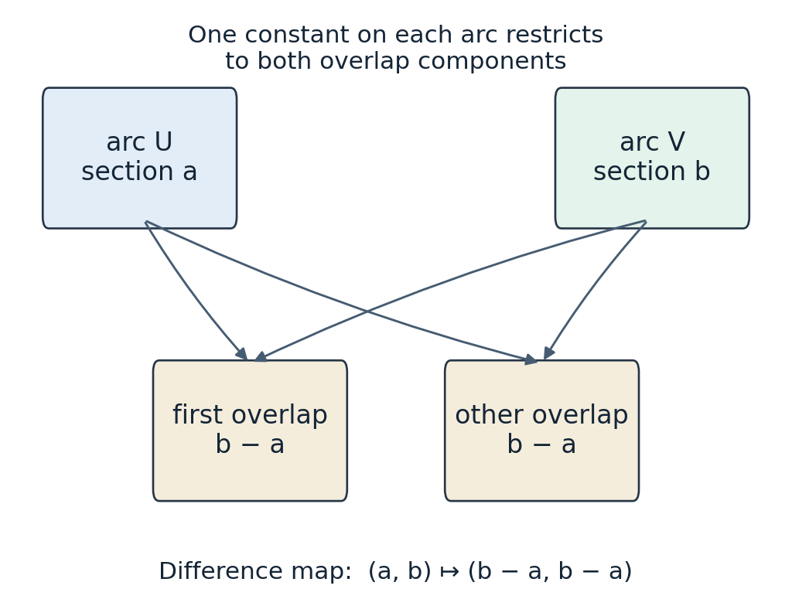

Čech cohomology
Written by GPT-6.1 Sol (OpenAI), in Codex, at Ultra effort, October 2026. Self-checked by the writing AI, GPT-6.1 Sol, at Ultra effort. Public domain (CC0).
Local sections are easy to write down. Their compatibility is a separate calculation. Čech cohomology organizes that calculation using intersections of an open cover. In degree one it describes how to glue objects that are locally trivial: torsors, and in particular line bundles. In higher degrees it computes sheaf cohomology when the intersections themselves have no higher cohomology.
We assume Cohomology of sheaves on ringed spaces, including flasque acyclicity and the use of injective resolutions. Basic references are [Stacks] and [Derived sheaves]. We work first with an abelian sheaf \(\mathcal F\) on a space \(X\). For modules on a ringed space the same constructions preserve the module structures. For line bundles the ringed space is commutative and locally ringed.
The important distinction is between a fixed cover and all local information. A fixed cover always gives an injection into sheaf cohomology in degree one. An isomorphism in every degree requires a reason. We will prove a criterion that can be checked by localization on affine schemes in the next lesson.
1. Overlap equations
Let \(\mathcal U=(U_i)_{i\in I}\) be an open cover of \(X\), and put \(U_{i_0\ldots i_p}=U_{i_0}\cap\cdots\cap U_{i_p}\). Empty intersections contribute the zero group. The full Čech complex is \[ C^p(\mathcal U,\mathcal F)= \prod_{(i_0,\ldots,i_p)\in I^{p+1}} \mathcal F(U_{i_0\ldots i_p}),\qquad p\geq0. \] Its differential is \[ (\delta c)_{i_0\ldots i_{p+1}} =\sum_{a=0}^{p+1}(-1)^a c_{i_0\ldots\widehat{i_a}\ldots i_{p+1}} \big|_{U_{i_0\ldots i_{p+1}}}. \] Deleting two indices in either order gives opposite signs, so \(\delta^2=0\). Its cohomology is denoted \(\check H^p(\mathcal U,\mathcal F)\).
A zero-cocycle is a collection \(c_i\in\mathcal F(U_i)\) with \(c_j=c_i\) on overlaps. The sheaf axiom identifies these collections with \(\mathcal F(X)\), and therefore \[ \check H^0(\mathcal U,\mathcal F)=\mathcal F(X). \] A one-cocycle satisfies \[ c_{jk}-c_{ik}+c_{ij}=0 \quad\text{on }U_i\cap U_j\cap U_k. \] Repeated indices imply \(c_{ii}=0\), and then \(c_{ji}=-c_{ij}\). A one-coboundary has the form \(c_{ij}=b_j-b_i\). These are exactly the equations for differences of local choices.
If \((V_j)\) refines \(\mathcal U\), choose an index \(\rho(j)\) with \(V_j\subset U_{\rho(j)}\). Restricting \(c_{\rho(j_0)\ldots\rho(j_p)}\) defines a cochain map. The resulting cohomology map is independent of the choice: two choices are joined by the prism homotopy which inserts one choice up to a chosen position and the other choice afterwards, with alternating signs. In degree one this is visible directly as a change of local trivializations. Thus refinement gives a consistent way to compare computations.
For a short exact sequence of presheaves of abelian groups, the Čech complexes form a short exact sequence of complexes: exactness of presheaves is exactness on each open, and products of exact sequences of abelian groups are exact. Their cohomology is consequently a delta functor on presheaves. For a short exact sequence of sheaves the last map on sections need not be onto; this argument must not be applied without checking that additional condition.
2. A smaller complex without repeated indices
Give \(I\) a total order. The ordered complex uses only \(i_0<\cdots<i_p\). Its differential is the same alternating deletion formula. Extend an ordered cochain to all tuples by sorting, multiplying by the permutation sign, and assigning zero to tuples with a repeated index. Its image is the alternating complex. Here vanishing on repeated indices is part of the definition; antisymmetry alone would not imply it for coefficients with two-torsion.
Theorem 2.1. The ordered and alternating complexes are isomorphic, and their inclusion into the full complex is a homotopy equivalence. No division by a factorial is involved.
Proof. Restriction to increasing tuples and signed extension are inverse maps. They commute with the differential: for distinct indices this is the sign rule for deleting a vertex; when two indices coincide, the two possibly nonzero terms cancel. To prove the homotopy assertion we construct the chain homotopy before evaluating sections.
For a finite nonempty set of indices \(S\), let \(T_n(S)\) be the free abelian group on all tuples \((i_0,\ldots,i_n)\) in \(S\), with the alternating deletion boundary \(\partial\), augmented in degree zero by sending every vertex to \(1\). Let \(A_n(S)\) be the free group on increasing tuples. Sorting with sign, and sending repeated tuples to zero, gives a chain map \(P:T_\bullet(S)\to A_\bullet(S)\). Inclusion gives a chain map \(J\) with \(PJ=1\).
We define \(H_n\) recursively on a tuple \(w\) with support \(S\), using only vertices in its support. Set \(H_{-1}=0\). Suppose the identity \(\partial H_{n-1}+H_{n-2}\partial=1-JP\) holds in lower degree. Then \[ z=w-JP(w)-H_{n-1}(\partial w) \] is a cycle: apply \(\partial\), the chain-map property of \(JP\), and the induction identity. In degree zero \(z=0\). Let \(m\) be the least vertex of \(S\), and let \(C_m\) prepend \(m\) to a tuple. Directly from the boundary formula, \(\partial C_m+C_m\partial=1\) on the augmented complex. Put \(H_n(w)=C_m(z)\). Since \(\partial z=0\), we obtain \[ \partial H_n(w)+H_{n-1}(\partial w)=w-JP(w). \] Extend by linearity. The induction supplies a homotopy in every degree, and all tuples appearing in \(H_n(w)\) use vertices from the support of \(w\).
Apply a cochain to this identity. A tuple in that homotopy has an intersection containing the intersection attached to \(w\), so its section can be restricted to the latter intersection. Every component involves a finite sum, even if the cover is infinite. The dual identity is \(\delta h+h\delta=1-P^*J^*\). Here \(J^*\) restricts a full cochain to increasing tuples and \(P^*\) is signed extension. This proves the homotopy equivalence. \(\square\)
Reference: [Stacks, Tags 01FJ and 01FM]. This construction explains why ordered complexes are safe over arbitrary coefficient groups. Averaging over permutations would give a different argument that fails when the factorial is not invertible.
3. Comparing overlaps with derived cohomology
Lemma 3.1. For an injective sheaf of modules \(\mathcal I\), the augmented Čech complex of any open cover is exact. Thus \(\check H^p(\mathcal U,\mathcal I)=0\) for \(p>0\).
Proof. In modules on \(X\), form the augmented chain complex \[ \cdots\to \bigoplus_{i,j}j_{ij!}\mathcal O_{U_{ij}} \to\bigoplus_i j_{i!}\mathcal O_{U_i} \to\mathcal O_X\to0. \] Its boundary is alternating deletion, using the natural maps between extensions by zero. At a stalk \(x\), only indices with \(x\in U_i\) contribute. Those indices form a nonempty set. Prepending any one of them contracts the augmented stalk complex, by the cone identity in Theorem 2.1. The sheaf complex is therefore exact. Applying \(\operatorname{Hom}_{\mathcal O_X}(-,\mathcal I)\) preserves exactness because \(\mathcal I\) is injective. The adjunction for extension by zero identifies each resulting factor with \(\mathcal I(U_{i_0\ldots i_p})\). This is the augmented full Čech complex. For abelian sheaves take \(\mathcal O_X=\mathbf Z_X\). \(\square\)
Take an injective resolution \(\mathcal F\to\mathcal I^\bullet\), and consider the first-quadrant double complex \[ D^{p,q}=C^p(\mathcal U,\mathcal I^q). \] Its total differential is \(\delta+(-1)^p d\). Computing horizontal cohomology first, Lemma 3.1 leaves only the augmented column \(\Gamma(X,\mathcal I^\bullet)\). Thus the total cohomology is \(H^\bullet(X,\mathcal F)\). Computing vertical cohomology first gives \[ E_1^{p,q}=\prod_{i_0,\ldots,i_p} H^q(U_{i_0\ldots i_p},\mathcal F), \qquad E_2^{p,0}=\check H^p(\mathcal U,\mathcal F). \] Products commute with cohomology of complexes of abelian groups because products are exact. Both filtrations converge: in every total degree only finitely many bidegrees occur. This proves the Čech-to-cohomology spectral sequence, rather than assuming a comparison from the outset.
This also describes the derived inclusion of sheaves into presheaves. Apply inclusion to an injective sheaf resolution; its cohomology presheaf in degree \(q\) has value \(H^q(V,\mathcal F)\) on \(V\). The Čech construction on that resolution produces exactly the double complex above. The higher derived presheaves express the information lost by evaluating a sheaf resolution on an open before sheafifying its cohomology.
Theorem 3.2 (acyclic covers). If \(H^q(U_{i_0\ldots i_p},\mathcal F)=0\) for all \(q>0\) and every nonempty finite intersection, then the natural comparison is an isomorphism \[ \check H^p(\mathcal U,\mathcal F)\cong H^p(X,\mathcal F) \] for every \(p\).
Proof. All rows of the vertical-first spectral sequence except \(q=0\) vanish. It degenerates to that row, giving the comparison isomorphisms. Theorem 2.1 allows the ordered complex in place of the full complex. \(\square\)
For a finite cover with \(r\) members, its ordered complex has no terms in degree \(r\) or higher. Under the theorem's conditions this gives a useful cohomological bound. Without those conditions, short length of the ordered complex bounds only the cohomology of that cover.
4. A basis criterion for vanishing
Sometimes acyclicity is what must be proved. The following criterion turns a calculation with sections into that proof.
Theorem 4.1 (basis criterion). Let \(\mathcal B\) be a basis of opens, and let \(\mathrm{Cov}\) be a collection of covers of members of \(\mathcal B\). Assume:
- Every cover member and every nonempty finite intersection in these covers belongs to \(\mathcal B\).
- Every open cover of a basis member is refined by a cover in \(\mathrm{Cov}\).
- For every cover in \(\mathrm{Cov}\), the positive Čech cohomology of \(\mathcal F\) is zero.
Then \(H^q(W,\mathcal F)=0\) for \(W\in\mathcal B\) and \(q>0\).
Proof. Embed \(\mathcal F\) into an injective \(\mathcal I\), and put \(\mathcal Q=\mathcal I/\mathcal F\). For \(s\in\mathcal Q(W)\), choose a cover where \(s\) lifts to \(\mathcal I\). Refine it to a cover in \(\mathrm{Cov}\). Differences of the chosen lifts are a one-cocycle with values in \(\mathcal F\). Assumption 3 makes it a coboundary, so correcting the lifts by sections of \(\mathcal F\) makes them agree. They glue to a lift on \(W\). Hence \[ 0\to\mathcal F(W)\to\mathcal I(W)\to\mathcal Q(W)\to0 \] is exact for all basis members.
Assumption 1 now makes the Čech complexes of this short exact sequence termwise exact for every cover in \(\mathrm{Cov}\). Lemma 3.1 and assumption 3, together with their long exact sequence, imply that \(\mathcal Q\) also has zero positive Čech cohomology for those covers. The preceding lifting argument therefore applies again to \(\mathcal Q\). Repeating the construction gives an injective resolution of \(\mathcal F\) whose successive short exact sequences remain exact on every basis member. Taking sections gives an exact complex in all positive degrees, which proves the assertion. \(\square\)
Reference: [Stacks, Tag 01EW]. The cofinality of the allowed covers is crucial. Vanishing for a single convenient cover of each basis member does not establish the lifting argument.
5. Torsors are first cohomology classes
An \(\mathcal F\)-torsor is a sheaf of sets \(T\), with an action of the abelian sheaf \(\mathcal F\), that is locally isomorphic to \(\mathcal F\) acting on itself by translations. Equivalently, it has local sections and the action is locally simply transitive. Choosing a section \(s_i\) on each \(U_i\) gives unique differences \[ s_j=s_i+c_{ij},\qquad c_{ij}\in\mathcal F(U_{ij}). \] The torsor laws give the one-cocycle equation. Replacing \(s_i\) by \(s_i+b_i\) replaces \(c_{ij}\) by \(c_{ij}+b_j-b_i\).
Conversely, a one-cocycle glues copies of the sheaf \(\mathcal F|_{U_i}\) by translations. The cocycle equation is exactly the consistency condition on triple overlaps. Thus \(\check H^1(\mathcal U,\mathcal F)\) classifies torsors with a section on every cover member, up to equivariant isomorphism. A torsor is trivial precisely when it has a global section: translating that section gives an isomorphism \(\mathcal F\to T\).
Theorem 5.1. Isomorphism classes of \(\mathcal F\)-torsors are naturally classified by \(H^1(X,\mathcal F)\). The comparison \(\check H^1(\mathcal U,\mathcal F)\to H^1(X,\mathcal F)\) is injective, and its image consists exactly of classes of torsors trivial on every \(U_i\).
Proof. Fix an embedding \(\mathcal F\hookrightarrow\mathcal I\) into an injective abelian sheaf and let \(\mathcal Q=\mathcal I/\mathcal F\). The long exact sequence gives \[ H^1(X,\mathcal F)=\mathcal Q(X)/\operatorname{im}\mathcal I(X). \] For \(q\in\mathcal Q(X)\), the sheaf of lifts of \(q\) in \(\mathcal I\) is an \(\mathcal F\)-torsor \(T_q\). It has local sections because \(\mathcal I\to\mathcal Q\) is onto as a sheaf map. Translation by a global section of \(\mathcal I\) identifies the torsors attached to two representatives of the same class.
For any torsor, choose local sections on a cover, with cocycle \(c_{ij}\). Viewed in \(\mathcal I\), this cocycle is a coboundary by Lemma 3.1. Write \(c_{ij}=a_j-a_i\), with \(a_i\in\mathcal I(U_i)\). The images of the \(a_i\) in \(\mathcal Q\) agree, giving \(q\in\mathcal Q(X)\). The map sending \(s_i+b\) to \(a_i+b\) identifies the original torsor with \(T_q\). Another choice of \(a_i\) changes \(q\) by the image of a global section of \(\mathcal I\). Changing local sections, or refining the cover, likewise leaves its cohomology class unchanged.
Finally, an equivariant isomorphism \(T_q\to T_{q'}\) is locally translation by a section of \(\mathcal I\). On overlaps these translation sections agree, by equivariance, and hence give a global section carrying \(q\) to \(q'\). This proves injectivity and that the constructions are inverse. It also identifies the group law: adding cocycles corresponds to adding the representatives \(q\), or to the contracted sum of torsors.
For a fixed cover the same calculation proves the comparison injection. If the class of \(q\) is zero, choose a global lift \(a\). Then \(a_i-a\) lies in \(\mathcal F(U_i)\) and trivializes the original cocycle. Conversely, \(T_q\) has a section on \(U_i\) exactly when \(q|_{U_i}\) lifts there, equivalently when the restricted cohomology class vanishes. Such local lifts produce its Čech representative. The class constructed from the double complex is the same connecting class, so this is the natural comparison map. \(\square\)
6. Frames of line bundles
For a commutative locally ringed space, write \(\mathcal O_X^*\) for the abelian sheaf of units. Its cohomology is cohomology of abelian groups, with multiplication written multiplicatively. A line bundle means a locally free \(\mathcal O_X\)-module of rank one. Its local frames form an \(\mathcal O_X^*\)-torsor: two frames differ by a unique unit.
Theorem 6.1. There is a natural isomorphism of abelian groups \[ \operatorname{Pic}(X)\cong H^1(X,\mathcal O_X^*). \]
Proof. Choose local frames \(e_i\) of a line bundle. Write \(e_j=e_i g_{ij}\). The \(g_{ij}\) are units, and \(g_{ij}g_{jk}=g_{ik}\). A change of frames multiplies them by a multiplicative coboundary. Conversely, such a cocycle glues free rank-one modules by these isomorphisms. The triple-overlap equation ensures that the resulting sheaf is well defined and locally free of rank one. These constructions are inverse, including on isomorphisms. Theorem 5.1 identifies their classes with \(H^1(X,\mathcal O_X^*)\). Tensoring frames multiplies transition functions, the trivial line bundle gives the unit cocycle, and the dual bundle inverts it. Thus the bijection is an isomorphism of groups. \(\square\)
If one defines an invertible module through a tensor inverse, the equivalence with local freeness of rank one on a locally ringed space is the elementary module-theoretic prerequisite [Stacks, Tag 0B8M]. It is the local-ring condition that permits that identification. The cocycle proof itself applies whenever the objects under discussion are locally free of rank one.
7. A calculation on the projective line
Let \(X=\mathbf P^1_k\), with \(U_0=(x_0\ne0)\), \(U_1=(x_1\ne0)\), and \(t=x_1/x_0\) on \(U_0\). The overlap has ring \(k[t,t^{-1}]\). Choose frames \(e_0,e_1\) of \(\mathcal O(n)\) with \(e_1=t^n e_0\). The ordered complex has only two degrees, and the degree-one quotient is \[ \check H^1(\mathcal U,\mathcal O(n)) =\frac{k[t,t^{-1}]}{k[t]+t^n k[t^{-1}]}. \] For \(n=-2\), all powers \(t^j\) with \(j\geq0\) belong to the first summand, and all with \(j\leq-2\) to the second. The sole surviving monomial is \(t^{-1}\). The quotient is therefore one-dimensional over \(k\). No convergence or analytic expansion is involved: Laurent polynomials are finite sums.
By Theorem 5.1 the line bundle \(\mathcal O(n)\) has multiplicative cocycle \(t^n\) in these frames. This is a different cohomology group from the additive quotient just calculated. The comparison between that additive quotient and \(H^1(\mathbf P^1_k,\mathcal O(-2))\) will follow from affine acyclicity in the next lesson. So far we have calculated Čech cohomology and its injection into sheaf cohomology.
The same cover method works for a circle, once the following elementary vanishing fact supplies the needed intersections.
Proposition 7.1 (constant coefficients on intervals). If \(J\) is an open interval and \(A\) an abelian group, then the constant sheaf \(A_J\) has zero positive cohomology on \(J\), and on every open subset of \(J\).
Proof. Let \(\mathcal P(W)\) be the group of all functions \(W\to A\), with no continuity condition. It is a flasque sheaf: extend a function arbitrarily at the new points. Locally constant functions embed \(A_J\) into \(\mathcal P\); let \(\mathcal Q\) be the sheaf quotient. We show that every section of \(\mathcal Q\) on an open \(W\) is represented by a single function on \(W\).
It suffices to work on one interval component of \(W\). Choose a cover where the section has representatives \(f_i\) in \(\mathcal P\). This cover has a refinement by a sequence of intervals with connected consecutive overlaps, no nonconsecutive overlaps, and no triple overlaps. Here is a construction. Identify the interval with \(\mathbf R\). On each compact band \([n,n+1]\), a finite subcover has a Lebesgue number; subdivide the band into finitely many closed segments shorter than that number. Each segment lies in a cover member. Enlarge each segment slightly inside that member. Choose each enlargement smaller than one quarter of the lengths of the adjacent segments. The enlarged segments cover \(\mathbf R\), overlap only with their neighbours, and have the required properties. The partition is locally finite, so the intervals can be indexed in their order by \(\mathbf Z\).
On each consecutive overlap the difference of two representatives belongs to \(A_J\), and is therefore a constant element of \(A\). Start at one interval and successively add constants to the representatives in both directions, making neighbouring representatives agree. The absence of a cycle ensures consistency. They glue as functions to a representative on the whole component. Repeating on each component gives a function on \(W\). Thus \(\mathcal P(W)\to\mathcal Q(W)\) is surjective for every open \(W\). A representative on a smaller open extends as a function on a larger one, so \(\mathcal Q\) is flasque too. The exact sequence \[ 0\to A_J\to\mathcal P\to\mathcal Q\to0 \] is a flasque resolution of length one, and its sections are exact on every open. It computes cohomology by the preceding lesson, giving the claimed vanishing in all positive degrees. \(\square\)
Cover a circle by two connected arcs whose intersection has two components. The ordered complex for \(A\) is \(A\oplus A\to A\oplus A\), with \((a,b)\mapsto(b-a,b-a)\). Its kernel and cokernel are both \(A\), the latter identified by taking the difference of the two coordinates. Proposition 7.1 makes the arcs and their intersection acyclic; on the disjoint union, take the product of the two resolutions. Theorem 3.2 now gives \(H^0(S^1,A)=H^1(S^1,A)=A\), with higher groups zero. This calculation requires no comparison with singular cohomology.

Figure 1. Schematic of the restriction maps for the two-arc cover. The image is the diagonal subgroup of the two overlap values. Their difference measures the surviving first cohomology class.
8. Exercises with solutions
Exercise 8.1 (easy: another negative twist). Compute the ordered Čech cohomology of \(\mathcal O(-4)\) on the standard two-open cover of \(\mathbf P^1_k\).
Solution. Degree zero consists of Laurent polynomials lying in both \(k[t]\) and \(t^{-4}k[t^{-1}]\), whose exponent sets are disjoint, so is zero. Degree one is the quotient by their sum. Its basis is \(t^{-1},t^{-2},t^{-3}\). Higher groups vanish because the ordered complex has no higher terms. The identical calculation for \(\mathcal O(-2)\) leaves only \(t^{-1}\).
Exercise 8.2 (medium: the degree-one injection). Using an injective embedding \(\mathcal F\to\mathcal I\), prove that a Čech one-cocycle whose sheaf cohomology class vanishes is a Čech coboundary on the original cover.
Solution. Solve \(c_{ij}=a_j-a_i\) in \(\mathcal I\), and let \(q\) be the common image of \(a_i\) in \(\mathcal Q\). The cohomology class is the connecting image of \(q\). If it is zero, the long exact sequence gives \(q\) as the image of some \(a\in\mathcal I(X)\). The sections \(b_i=a_i-a|_{U_i}\) lie in \(\mathcal F(U_i)\) and satisfy \(c_{ij}=b_j-b_i\). No refinement is necessary.
Exercise 8.3 (medium: the recursive homotopy). Verify the cycle assertion for \(z\) in Theorem 2.1 and the identity \(\partial C_m+C_m\partial=1\). Explain why their dual is meaningful for a sheaf with nonconstant restriction maps.
Solution. The induction identity gives \(\partial H_{n-1}\partial w=(1-JP)\partial w\), since \(\partial^2w=0\). Subtracting this from \(\partial(w-JPw)\) gives zero. In \(\partial(m,i_0,\ldots,i_n)\), deletion of \(m\) contributes \((i_0,\ldots,i_n)\); every other deletion cancels the corresponding term in \(C_m\partial(i_0,\ldots,i_n)\). In the augmented degree-zero calculation use \(C_m(1)=(m)\). Every homotopy tuple uses indices in the original support. Thus its intersection contains the original intersection, and restriction maps move all sections to the correct domain. Their functoriality ensures that the chain identity remains a cochain identity after these restrictions.
Exercise 8.4 (medium: sign of a transition). With \(t=x_1/x_0\), show that the frames \(x_0^n,x_1^n\) of \(\mathcal O(n)\) give transition \(t^n\). Explain the transition for the dual bundle.
Solution. On the overlap, \(x_1^n=t^n x_0^n\); for negative \(n\) these symbols denote the corresponding local generators of the dual twists. Thus \(e_1=e_0t^n\). Dual frames satisfy \(e_1^\vee=t^{-n}e_0^\vee\), since evaluating them on their respective frames gives one. The dual cocycle is the inverse and represents \(\mathcal O(-n)\).
Exercise 8.5 (medium: when a finite cover suffices). Assume a cover with three members satisfies Theorem 3.2. Give the ordered complex, its signs, and a vanishing bound for sheaf cohomology.
Solution. Its terms are \(\prod_i\mathcal F(U_i)\), \(\mathcal F(U_{01})\oplus\mathcal F(U_{02})\oplus\mathcal F(U_{12})\), and \(\mathcal F(U_{012})\). The first differential is \((b_1-b_0,b_2-b_0,b_2-b_1)\); the second is \(c_{12}-c_{02}+c_{01}\), after restriction. Theorem 3.2 identifies its cohomology with sheaf cohomology, which vanishes in degrees at least three. The double-complex proof establishes the comparison by eliminating all rows of positive intersection cohomology.
Exercise 8.6 (challenging: refining lifts). In Theorem 4.1, identify the exact role of each of its three assumptions and prove that \(\mathcal Q\) satisfies assumption 3 once sections on basis members lift.
Solution. Cofinality puts a locally liftable section on an allowed cover. Čech vanishing kills its difference cocycle and yields a global lift. The intersection condition makes the resulting surjectivity on basis members apply to every factor of an allowed Čech complex. The complexes for \(\mathcal F,\mathcal I,\mathcal Q\) are then short exact. Their long exact sequence and \(\check H^{p+1}(\mathcal U,\mathcal F)=\check H^p(\mathcal U,\mathcal I)=0\) give \(\check H^p(\mathcal U,\mathcal Q)=0\) for \(p>0\). This permits iteration and proves vanishing in every degree, rather than only degree one.
Homological and module foundations
We use the injective and derived-functor foundations from [Derived sheaves]. For the double-complex spectral sequences, the open construction from filtered complexes is Stacks, Tag 012M, applied to the column and row filtrations. Their convergence follows from the finite-filtration proof Stacks, Tag 012W; the page terms are Stacks, Tag 0130. We use the module-theoretic identification of invertible modules with locally free rank-one modules on a locally ringed space, whose open proof is [Stacks, Tag 0B8M]. These linked reference proofs retain the GNU Free Documentation License 1.2; the prose and proofs written here are independent CC0 content. Affine acyclicity and the resulting interpretation of the projective-line Čech calculation are proved in the next lesson. The circle calculation includes its interval-acyclicity proof above.
References
- [Stacks] The Stacks project authors, The Stacks project, Cohomology of Sheaves: Tags 01EG, 01EP, 01ES, 01EW, 01FM, 02FQ, and 09NU. Modules, Tag 0B8M. These links use AI Integrated Stacks Project, an edition with AI-proposed corrections and additions, not reviewed by maintainers of the official Stacks project.
- [Derived sheaves] Sheaves of modules and their derived categories, Open Mathematics Courses. Read the lesson.
- [Kedlaya] K. S. Kedlaya, Sheaf cohomology, MIT 18.726 Algebraic Geometry, Spring 2009, Sections 5–6. Freely readable lecture notes, consulted as a complementary discussion of topological and Čech cohomology. No proof in this lesson depends on that discussion.